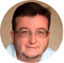

Конкурс СТАЛО можливий завдяки зусиллям ПРООН в Україні, НГО «Комунікації для змін» та Ekonomika Hub. Завданням проекту став пошук та визнання найкращих бізнесів в Україні, що розділяють філософію сталого розвитку та інтегрують її у щоденні процеси свого бізнесу. Дізнатися детальніше про умови конкурсу, що триває з 17-го квітня до 25 травня, можна на сторінці “Про проект стало”. Також ви можете завантажити “Правила конкурсу”.
Як стати учасником конкурсу?
Сьогодні український малий та середній бізнес отримав унікальну можливість для сталого розвитку. Адже саме у кризові часи суттєві зміни у моделі господарювання допомагають отримати користь. Учасником може стати будь-який дійсно існуючий бізнес, що використовує філософію сталого розвитку у своїй роботі. Знаєте такі бізнеси? Створюєте їх? Пишіть нам!
Як і хто оцінює?
Експертне жюрі, члени якого довгий час працюють над популяризацією сталого розвитку в Україні, будуть оцінювати проекти за наступними параметрами:
- економічний аспект:життєздатність бізнес-моделі;
- екологічний аспект:позитивний вплив на навколишнє середовище;
- соціальний аспект:покращення якості життя;
- інноваційність;
- масштабованість рішення.

Євген Хлобистов
Інститут економіки природокористування та сталого розвитку НАН України, доктор економічних наук, професор
Світлана Берзіна
Президент Всеукраїнської громадської організації «Жива планета»
Руслан Краплич
Незалежний експерт USAID, член наглядової ради Інституту лідерства та управління Українського католицького університету
Руслан Краплич
Незалежний експерт USAID, член наглядової ради Інституту лідерства та управління Українського католицького університету
Руслан Краплич
Незалежний експерт USAID, член наглядової ради Інституту лідерства та управління Українського католицького університету